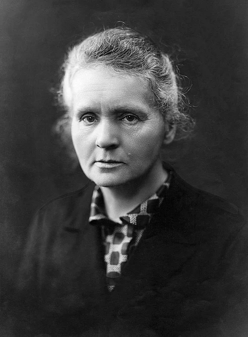

Two Nobel Prizes
The first person to win Nobel Prizes in two different sciences: physics and chemistry.
A Tribute To
She followed an invisible glow and changed science forever.
1867 – 1934

Maria Skłodowska was born in Warsaw in 1867, at a time when Poland was under foreign rule and women were shut out of university classrooms. Curious from childhood and gifted with a remarkable memory, she studied in secret and worked as a tutor to help pay for her sister's medical studies, trusting that her own turn would come.
That turn came in 1891, when she moved to Paris and enrolled at the Sorbonne. She lived on very little, studied late into the night, and earned degrees in physics and mathematics. There she met Pierre Curie, a fellow physicist who treated her not as a helper but as an equal. Their marriage became one of the great partnerships in scientific history.
Together they chased a puzzle: why did certain minerals give off mysterious rays? Marie gave the phenomenon its name, "radioactivity", and showed that it came from within the atoms themselves, an idea that overturned how scientists thought about matter. In a leaking shed that served as their laboratory, they processed tonnes of ore by hand and isolated two new elements, polonium and radium. Marie named polonium after her homeland.
Even after Pierre's sudden death in 1906, she carried on. She took over his professorship and became the first woman to teach at the Sorbonne. During the First World War she helped equip vehicles with X-ray machines so that surgeons could find bullets and shrapnel near the front lines, and she drove some of them herself. Her work saved countless soldiers, and the radioactivity research she began continues to guide cancer treatment today.
Marie Curie's legacy is not only in the elements she discovered. It lives in every woman who walks into a laboratory that once would have turned her away, and in the simple idea that patient, stubborn curiosity can light up the world.
Nothing in life is to be feared, it is only to be understood. — Marie Curie
Born Maria Skłodowska in Warsaw on 7 November, the youngest of five children in a family of teachers.
Moves to Paris to study physics and mathematics at the Sorbonne.
Marries physicist Pierre Curie, beginning a lifelong scientific partnership.
Announces the discovery of two new elements, polonium and radium.
Shares the Nobel Prize in Physics with Pierre Curie and Henri Becquerel, becoming the first woman to win a Nobel Prize.
After Pierre's death, becomes the first female professor at the Sorbonne.
Wins the Nobel Prize in Chemistry for isolating radium and studying its properties.
Develops mobile X-ray units for military hospitals and trains others to operate them.
Dies on 4 July in France, most likely from illness caused by years of exposure to radiation.
The first person to win Nobel Prizes in two different sciences: physics and chemistry.
Coined the term and proved it is a property of atoms themselves.
Discovered polonium and radium, and isolated pure radium.
Helped bring mobile X-ray units to the front lines in World War I.
First woman professor at the Sorbonne, and an inspiration to generations of scientists.